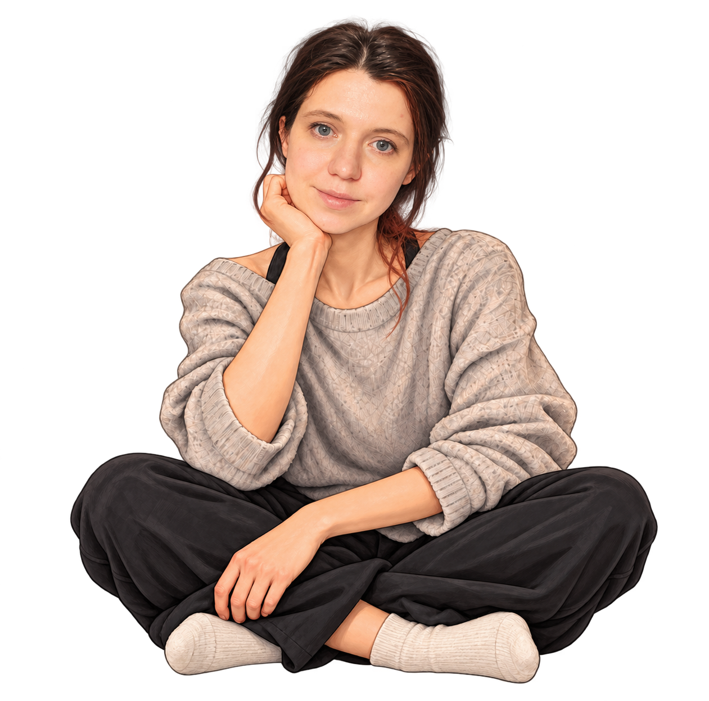

Outlines are rough selection guides, not finished cutout masks. Crosses mark where each part would rotate.
Animation workshop · coordinate map
Every part shares the original image’s coordinates. Nothing moves on the CV yet.

Outlines are rough selection guides, not finished cutout masks. Crosses mark where each part would rotate.